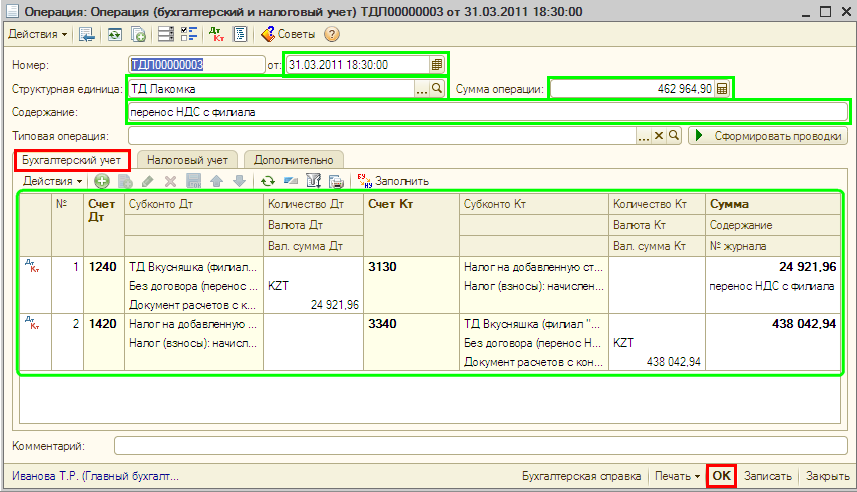

Помимо ввода хозяйственных операций с помощью документов, когда проводки формируются автоматически, «1С:Бухгалтерия 8 для Казахстана» позволяет регистрировать хозяйственные операции вручную, без использования документов. Этот способ ведения учета может быть более приемлем при небольшом количестве хозяйственных операций, а также для ввода тех операций, для которых в типовой конфигурации нет соответствующих документов.
| ПРИМЕЧАНИЕ Ввод проводок вручную — это запись в информационную базу операций, не автоматизированных документами. Операция в «1С:Бухгалтерии 8 для Казахстана» — это логическое объединение произвольного количества проводок бухгалтерского и налогового учета определенной организации, которые одновременно регистрируются в информационной базе. |
Для ввода операции вручную необходимо открыть специализированный журнал для операций, введенных вручную (меню Операции— Операция (бухгалтерский и налоговый учет), и нажать в командной панели кнопку Добавить (или клавишу Insert или воспользоваться меню Действия — Добавить).
В открывшейся форме для ввода операции в шапке формы вводится общая информация, а в табличной части — проводки, относящиеся к данной хозяйственной операции. Для ввода каждой новой проводки используется кнопка панели инструментов табличной части. Проводки по бухгалтерскому учету отражаются на закладке Бухгалтерский учет, а проводки по налоговому учету — на закладке Налоговый учет.
Проводка в «1С:Бухгалтерии 8 для Казахстана» содержит следующие реквизиты:
После ввода всех проводок, относящихся к хозяйственной операции, необходимо нажать кнопку ОК в правой нижней части формы Операция (бухгалтерский и налоговый учет) для записи операции и закрытия формы.
| ПРИМЕЧАНИЕ При ведении учета вручную пользователь самостоятельно указывает все реквизиты проводок, а при регистрации фактов хозяйственной деятельности с помощью документов реквизиты проводок заполняются автоматически. |
Вручную, например, могут быть введены в информационную базу начальные остатки по счетам бухгалтерского и налогового учета:

СОВЕТ
Для ввода начальных остатков используйте проводки в корреспонденции со вспомогательным счетом 000.
Ввод начальных остатков при помощи ручных операций рекомендуется использовать для участков учета, по которым отсутствуют специальные документы (см. меню «Предприятие» - «Ввод начальных остатков»).
Только что Вы научились вводить проводки вручную.
Из следующего раздела Вы познакомитесь с журналами операций и проводок.